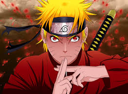

Naruto (ナルト) is a Japanese manga series written and illustrated by Masashi Kishimoto. It tells the story of Naruto Uzumaki, a young ninja who seeks to gain recognition from his peers and also dreams of becoming the Hokage, the leader of his village. The story is in two parts – the first set in Naruto's pre-teen years, and the second in his teens. The series is based on two one-shot manga by Kishimoto: Karakuri (1995), which earned Kishimoto an honorable mention in Shueisha's monthly Hop Step Award the following year, and Naruto (1997). Naruto was serialized in Shueisha's magazine, Weekly Shōnen Jump from 1999 to 2014, and released in tankōbon (book) form in 72 volumes. The manga was adapted into an anime television series produced by Pierrot and Aniplex, which broadcast 220 episodes in Japan from 2002 to 2007; the English adaptation of the series aired on Cartoon Network and YTV from 2005 to 2009. Naruto: Shippuden, a sequel to the original series, premiered in Japan in 2007, and ended in 2017, after 500 episodes. The English adaptation was broadcast on Disney XD from 2009 to 2011, airing the first 98 episodes, and then switched over to Adult Swim's Toonami programming block in January 2014, starting over from the first episode. The English adaptation is still airing weekly on Adult Swim to this day. Besides the anime series, Pierrot has developed eleven movies and twelve original video animations (OVAs). Other Naruto-related merchandise includes light novels, video games, and trading cards developed by several companies.
Naruto was born on the night of October 10th to Minato Namikaze (the Fourth Hokage) and Kushina Uzumaki (the second jinchūriki of the Nine-Tails). He was named after Naruto Musasabi, the protagonist of Jiraiya's first book, which made the Sannin his godfather.
Naruto, Sasuke, Sakura and Kakashi managed to seal her away. The war ended and each village returned to their territory in order to bury their shinobis who died. ... Now, what is currently happening is that Naruto became the seventh Hokage. Sasuke became a Konoha shinobi again.
Login Form for Watching Naruto